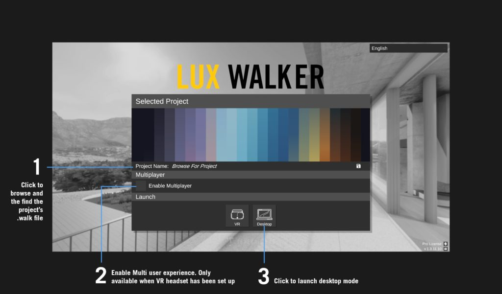
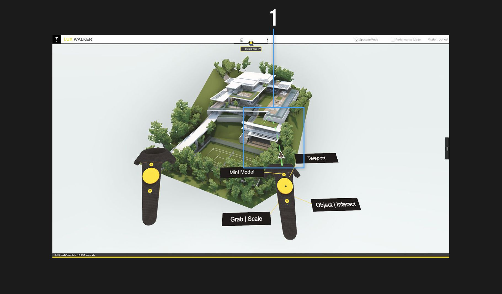
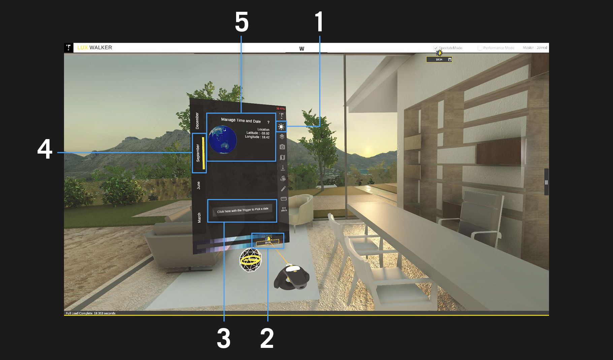
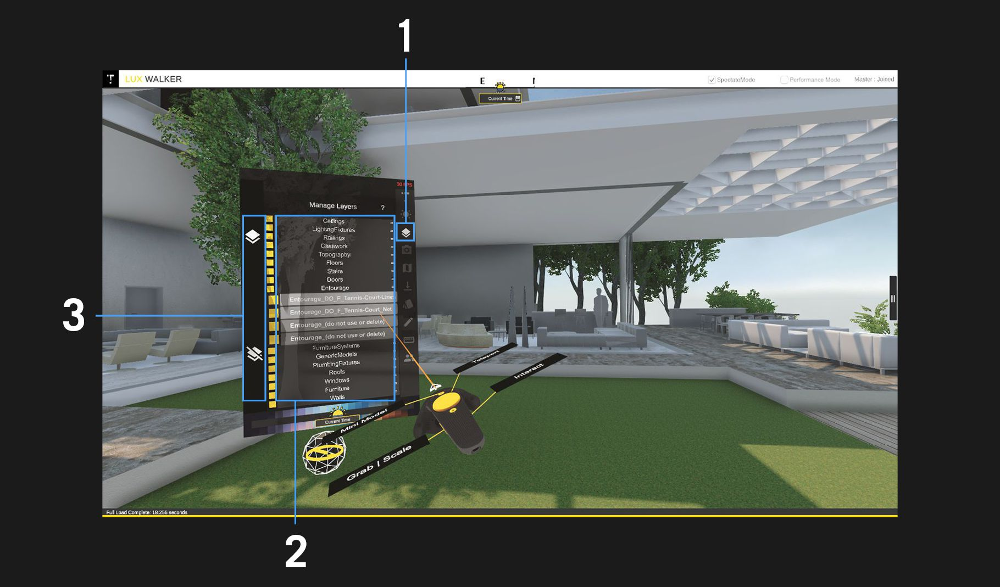
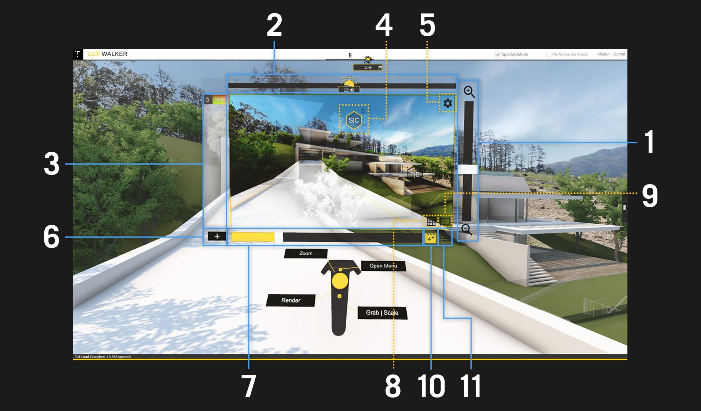
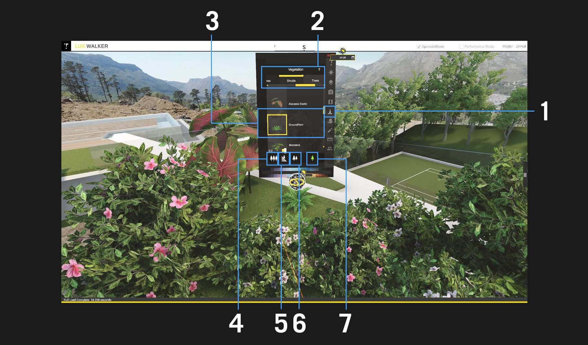
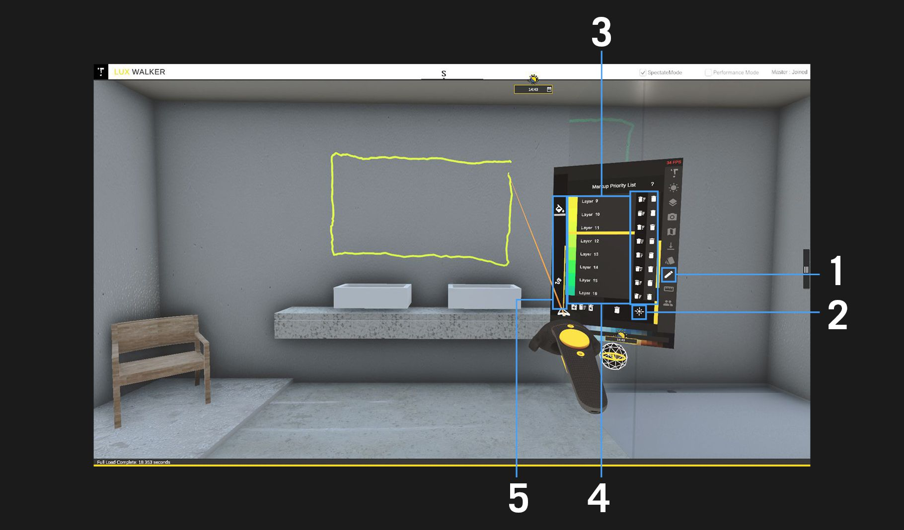
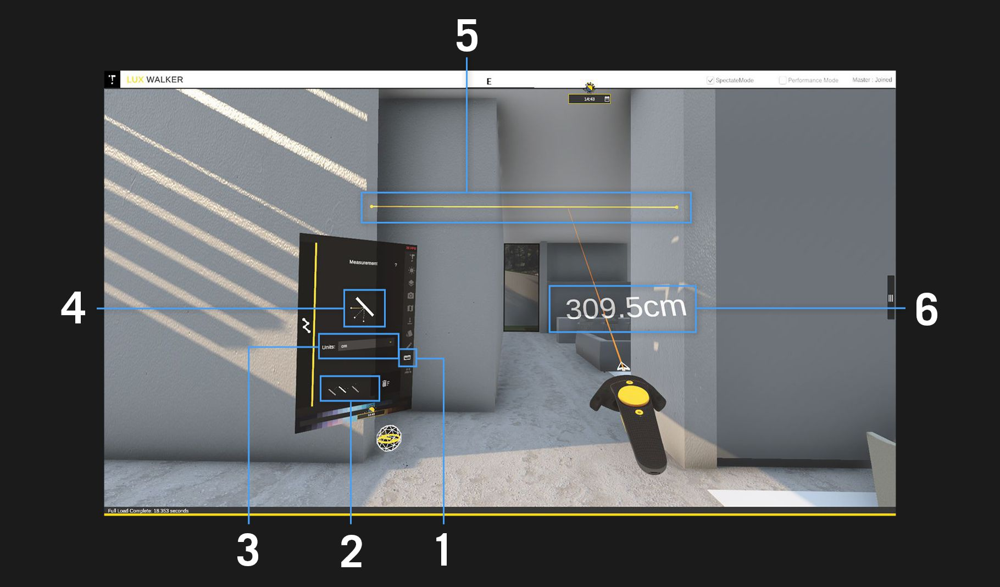

Start Screen:¶
Home¶
Select and choose project to load. (.WALK Files) – Opens file browser.
Click to enable multi user experience. See Multiplayer settings below.
Choose mode, either in VR mode (will only display if VR headset has been set up) or Desktop mode. Click to launch.
Step Into VR¶
Included from the LUX Walker home screen is a Tutorial level which will get you familiar with the LUX Walker interface and using its tools in VR. For your convenience the tools and features are listed below
Mini Model¶
View a scale model of your project. Teleport to any location on the map. Simply point and aim the controller at the desired location while holding down on the touchpad button. The teleport indicator will appear now release the button to teleport to that location.
Time Tool¶
Time Tool Icon — Click on this icon to access the time tool and the settings for the time tool.
Change the time of day with the suns correct geolocation. Drag the sliders handle icon left or right to change the time of day.
Select a custom date from the calendar.
Tabs can be used to select a season.
Displays the geolocation in the world.
Layer Tool¶
Layers Tool Icon — Click on this icon to access the layers for the project.
Manage Layers Window — Access all the layers and show and hide them by clicking on the yellow box on the left hand side of the layer.
Show/Hide all layers — The top icon activates all layers, while the bottom icon de-activates the layers.
Environment Tool¶
XXXXXX
Render Tool¶
Zoom — Use this slider to adjust how zoomed the view for your render is. Alternatively, use the touchpad in your non-laser hand to zoom in and out.
Time of day — Slide to change the time of day.
Presets — Contains a list of your preset camera settings.
Saturation/Contrast and Temperature/Exposure — Move this icon across your viewer to adjust the saturation/contrast and temperature/exposure of your view.
Settings — Clicking on this icon will open a menu containing resolution and quality settings.
Add Preset — Use this button to add a preset with current camera settings.
Filter Amount Slider — Use this slider to adjust how much the filter applies to the view
Grid Mode — Toggles a grid over your view.
Panorama Mode — Sets the view to panorama mode which will render a 360 image while active.
Filter Toggle — Toggles if the filter is active or not.
Filter List — Shows a list of the filters.
Placement Tool¶
Placement Tool Icon — Click on this icon to access the placement tool and the settings for the placement tool.
Navigation Tabs — Use this to navigate between different tabs for various object types.
Displays the current selected object.
Toggles multiple placement on/off.
Toggle upright snap on/off when placing objects.
Toggles random scale on/off for the current selected object.
Toggles between placement and deletion of placed objects.
Material Tool¶
XXXXXX
Annotation Tool¶
Annotation Tool Icon — Click on this icon to access the annotation tool and the settings for the annotation tool.
Distance Draw — Click on this icon to toggle distance draw on or off. If distance draw is off the annotation will not snap to objects.
Layer Controls — use these buttons to clear or delete the corresponding layer.
Layers — Select a layer to start making annotations on that layer.
Assign and draw modes — Select the Assign icon to assign drawings to the selected layer and switch back to the draw mode to create drawings on the currently selected layer.
Measure Tool¶
Measure Tool Icon — Click on this icon to access the measure tool and the settings for the measure tool.
Used to select a measure mode, this will influence the direction the measurement tool will measure in.
Use the drop down box to select the unit you wish to measure in.
Displays the measurement mode that is being used.
The visual reference of the distance measured.
Displays the distance between two surfaces.